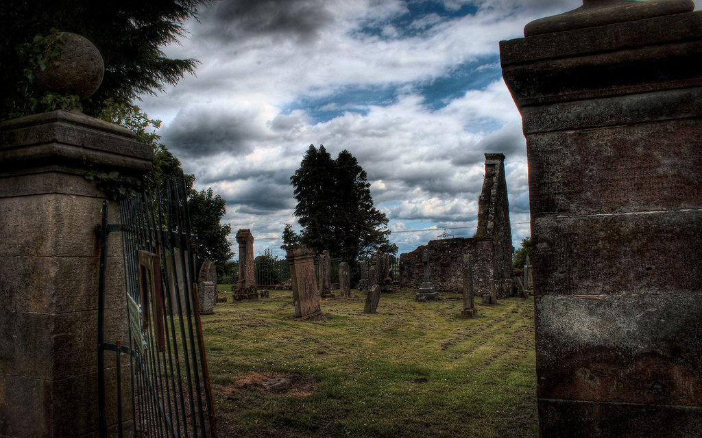

Home
Meet Von
Von's Origins
ADITL

"Glassford Graveyard" by JaredEarle is licensed under CC BY-NC-ND 2.0
Von does have some special abilities, but in his efforts to appear as normal as possible and forget what he actually is, he only uses them in emergencies. Due to being trapped underground for hundreds of years, he has exceptional night vision, as well as heightened hearing and smelling. Being a host to a spiteful apparition comes with some perks as well, as Von discovers when he begins to see other spirits. These spirits sometimes recognize him as a conduit to the living world, and will attempt to use him as such, but in Von’s desperate attempts to live an uneventful life, he tries to disassociate from ghosts as much as possible. Also, this isn’t really an ability, but Von has a taste for human flesh. He abstains from eating people, but every now and then when either angry or hungry enough, his zombie instincts kick in and demand he take a bite out of the nearest person. Resisting this urge can sometimes result in long periods of sickness, until the cravings eventually begin to fade.